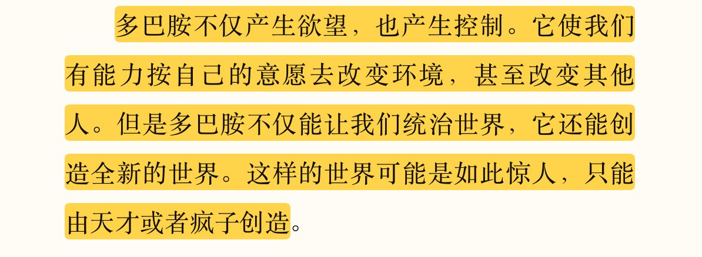
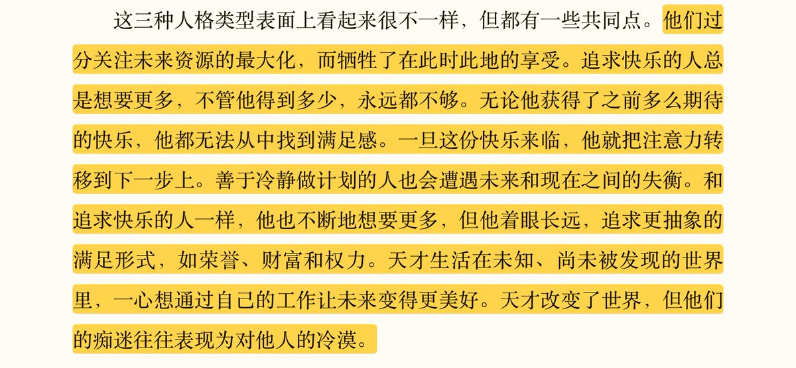
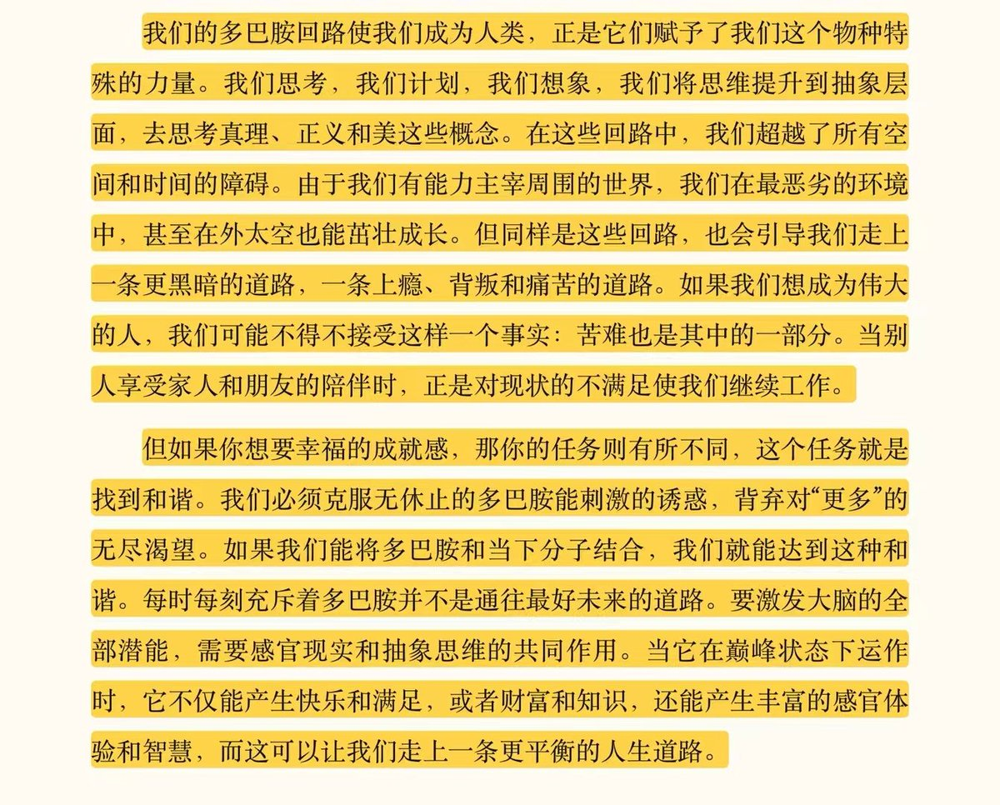

理论都知道了但是做起来很难吧……努力去关注“现在”只会觉得不足和惶恐；现在很渺小，真实得丑陋又不堪，而未来是瑰丽宏大的肥皂泡，是看一眼就会被引诱的幻梦。
“人的思维是一种漫游性思维，而漫游性思维会让人不快乐”。我畸形的模型让我主动寻求痛苦，否则我甚至连快乐都无法品尝……我不想麻木啊。

“人的思维是一种漫游性思维，而漫游性思维会让人不快乐”。我畸形的模型让我主动寻求痛苦，否则我甚至连快乐都无法品尝……我不想麻木啊。



甲鱼不正经书评31
《贪婪的多巴胺》
大概能解答为什么我容易厌倦，无法活在当下而过于向往极遥远的未来的问题。
虽然人的意识是非常复杂的东西，但人确实很大程度上会被这类小小的化学物质所操控，但利用这些来改变自己又是另外一回事……
总之仍需努力运用多巴胺的机制调整我的生活吧。 https://t.co/n61r8JnsVT
《贪婪的多巴胺》
大概能解答为什么我容易厌倦，无法活在当下而过于向往极遥远的未来的问题。
虽然人的意识是非常复杂的东西，但人确实很大程度上会被这类小小的化学物质所操控，但利用这些来改变自己又是另外一回事……
总之仍需努力运用多巴胺的机制调整我的生活吧。 https://t.co/n61r8JnsVT